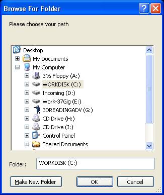

PathRequester()
Syntax
Path$ = PathRequester(Title$, InitialPath$)Description
Opens the standard path requester for the user to select a path.
Parameters
Title$ The title of the requester window. InitialPath$ The initial path to use when the requester is opened.
Return value
The selected path, or an empty string if the requester has been canceled by the user.
Remarks
The path is returned with the terminating '\' on Windows, or the terminating '/' on Linux and OS X.
Example
InitialPath$ = "C:\" ; set initial path to display (could also be blank) Path$ = PathRequester("Please choose your path", InitialPath$) If Path$ MessageRequester("Information", "You have selected following path:"+Chr(10)+Path$, 0) Else MessageRequester("Information", "The requester was canceled.", 0) EndIf

Supported OS
All